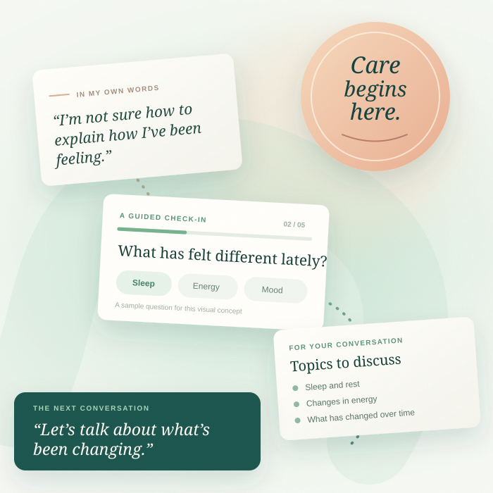

01 / 04
Dr. Maya Bennett
Consultant Psychiatrist
Private, approachable mental health assessments that help patients and care teams begin a better conversation.
Illustrative figures for this website concept. Replace with verified data before launch.

Care feels different when you know who is on your side. Meet the specialists who make thoughtful conversations possible.
Consultant Psychiatrist
Clinical Psychologist
Psychiatric Specialist
Consultant Psychiatrist
Demo doctor names, specialties, experience, and portraits are illustrative. Replace with verified clinician information before launch.
Pricing and access details will appear here when the service is ready.